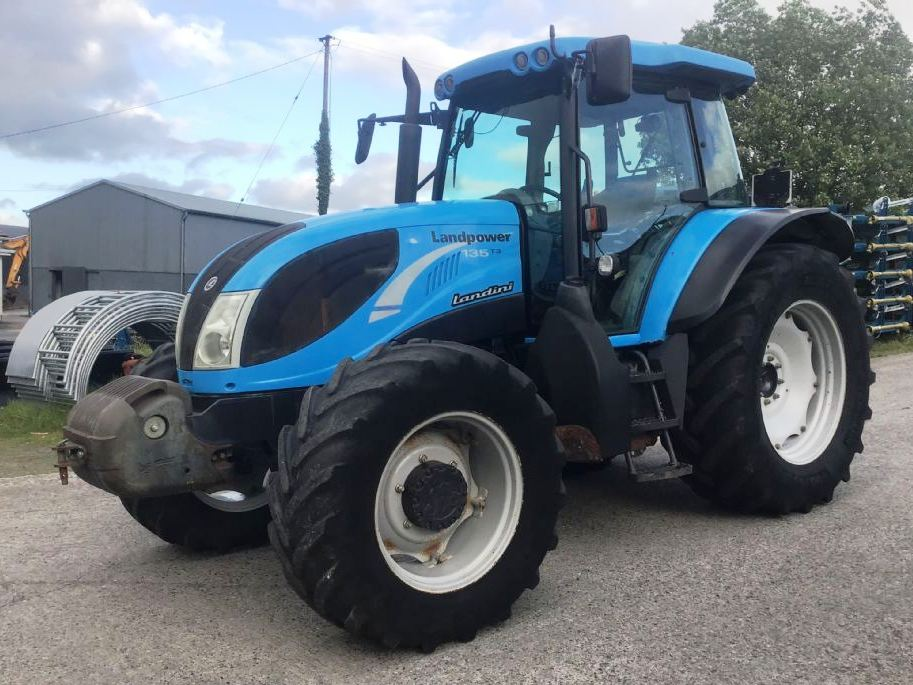

Landini Landpower 135

Landini Landpower 135 – це потужний та витривалий трактор загального призначення, який заслужив репутацію «механічного велетня» завдяки своїй простій конструкції та здатності працювати в екстремальних умовах. Велика кубатура двигуна забезпечує високий крутний момент, що дозволяє трактору легко справлятися з важкими плугами та глибокорозпушувачами.
Головна філософія цієї моделі – мінімум електроніки та максимум металу. Трактор комплектується повністю механічною трансмісією Speed Six з синхронізованим реверсом, що робить його надзвичайно надійним і дешевим у ремонті. Міцна задня навіска вантажопідйомністю до 7000 кг та продуктивна гідросистема дозволяють агрегатувати трактор із важким обладнанням, а простора кабіна з кондиціонером забезпечує базовий комфорт оператора під час тривалих польових робіт.
| Параметр | Значення |
|---|---|
| Клас тяги | 2.0 |
| Тип ходової частини | колісний |
| Колісна формула | 4х4 |
| Тип рами | жорстка конструкція |
| Основне призначення | енергоємні польові роботи, глибока оранка, посів, транспортування важких вантажів |
| Параметр | Значення |
|---|---|
| Модель | FPT (Fiat Powertrain) NEF 67 (Tier 3) |
| Тип двигуна | 6-циліндровий, дизельний, з турбонаддувом та інтеркулером |
| Спосіб охолодження | рідинне |
| Розташування циліндрів | рядне, вертикальне |
| Робочий об’єм | 6,7 л (6728 см³) |
| Номінальна потужність | 98,0 кВт (133,0 к.с.) |
| Максимальний крутний момент | 550 Н·м (при 1400 об/хв) |
| Номінальні оберти | 2200 об/хв |
| Очищення вихлопних газів | внутрішня рециркуляція (без AdBlue/DPF) |
| Питома витрата (оптимальна) | 209 г/кВт·год |
| Параметр | Значення |
|---|---|
| Тип КПП | механічна синхронізована Six-Speed |
| Кількість передач | 18 вперед / 18 назад (3 діапазони х 6 передач) |
| Діапазон швидкості вперед | 1,4 – 40,0 км/год |
| Діапазон швидкості назад | 1,4 – 40,0 км/год |
| Тип зчеплення | сухе, багатодискове, з гідравлічним приводом |
| Вал відбору потужності (ВВП) | 540 / 1000 об/хв |
| Діапазон | Передача | Передаточне число (iΣ) | Швидкість (Vt), км/год | Тягове зусилля (Pmax), кН |
|---|---|---|---|---|
| L (Low) Низький | 1 | 472,5 | 1,42 | 48,5 |
| L (Low) Низький | 2 | 384,1 | 1,75 | 46,2 |
| L (Low) Низький | 3 | 312,3 | 2,15 | 42,8 |
| L (Low) Низький | 4 | 253,9 | 2,64 | 36,5 |
| L (Low) Низький | 5 | 206,4 | 3,25 | 29,8 |
| L (Low) Низький | 6 | 167,8 | 4,00 | 24,1 |
| M (Medium) Середній | 1 | 158,2 | 4,24 | 22,8 |
| M (Medium) Середній | 2 | 128,6 | 5,22 | 18,5 |
| M (Medium) Середній | 3 | 104,5 | 6,42 | 15,1 |
| M (Medium) Середній | 4 | 85,0 | 7,90 | 12,2 |
| M (Medium) Середній | 5 | 69,1 | 9,71 | 10,0 |
| M (Medium) Середній | 6 | 56,2 | 11,94 | 8,1 |
| H (High) Високий | 1 | 51,8 | 12,96 | 7,3 |
| H (High) Високий | 2 | 42,1 | 15,94 | 5,9 |
| H (High) Високий | 3 | 34,2 | 19,62 | 4,7 |
| H (High) Високий | 4 | 27,8 | 24,14 | 3,5 |
| H (High) Високий | 5 | 22,6 | 29,69 | 2,8 |
| H (High) Високий | 6 | 18,4 | 36,46 | 2,0 |
| Параметр | Значення |
|---|---|
| Тип коліс | пневматичні шини |
| Шини передні (стандарт) | 420/70 R28 |
| Шини задні (стандарт) | 520/70 R38 |
| Радіус ведучого колеса (заднього) | 0,885 м (Rw) |
| Колія передніх коліс | 1700 – 2100 мм |
| Колія задніх коліс | 1700 – 2200 мм |
| Кліренс (дорожній просвіт) | 510 мм |
| Блокування диференціалу | електрогідравлічне |
| Режим роботи | Витрата, л/год |
|---|---|
| Важкі польові роботи (оранка 4-5 корпусним плугом) | 20,5 – 23,2 л/год |
| Середні польові роботи (дисковка, глибока культивація) | 14,0 – 17,0 л/год |
| Легкі роботи (посів, суцільна культивація) | 11,5 – 13,5 л/год |
| Транспортні роботи (переїзди з причепом) | 8,5 – 10,5 л/год |
| Холостий хід (зупинки, маневрування) | 1,4 – 1,9 л/год |
| Параметр | Значення |
|---|---|
| Експлуатаційна (робоча) вага | 5450 кг (без баласту) |
| Максимально допустима вага | 8800 кг |
| Довжина / Ширина / Висота | 5270 / 2350 / 2850 мм |
| Колісна база | 2730 мм |
| Об’єм паливного баку | 180 л |
| Параметр | Значення |
|---|---|
| Гідравлічна система | шестеренний насос, 66 + 26 л/хв |
| Вантажопідйомність навіски | 7000 кг |
| Максимальний тиск гідросистеми | 20,0 МПа |
| Особливості | Модель Techno відрізняється відсутністю системи T-Tronic (Powershift), що робить трансмісію повністю механічною та максимально надійною. Використання 6-циліндрового двигуна NEF забезпечує чудовий баланс та мінімальні вібрації. |
Ефект "Великого об'єму": Двигун 6,7 л працює менш напружено, ніж 4-циліндрові аналоги такої ж потужності. Велика робоча камера дозволяє отримати необхідну потужність при нижчому тиску наддуву, що позитивно впливає на ресурс та витрату палива.
Механічна трансмісія Six-Speed: Версія Techno використовує повністю механічний привід без гідравлічних муфт перемикання під навантаженням. Це забезпечує жорсткий зв'язок між двигуном і колесами з мінімальними втратами на тертя в масляних ваннах, підвищуючи загальний ККД трансмісії до 91%.
Інтеркулер (Air-to-Air): Система охолодження повітря перед подачею в циліндри збільшує вміст кисню в заряді. Це гарантує повне згоряння кожної краплі дизеля, знижуючи кількість незгорілих залишків і підвищуючи термодинамічний ККД.
Робоча зона обертів: Завдяки запасу крутного моменту (28%), трактор може виконувати більшість робіт у діапазоні 1300–1600 об/хв. Це найекономніша зона, де питома витрата палива є мінімальною.